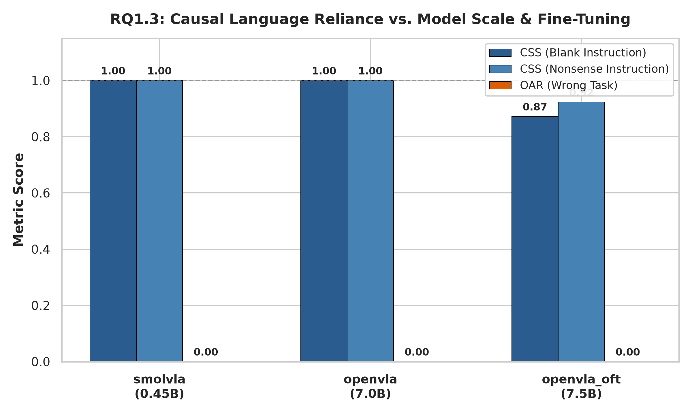
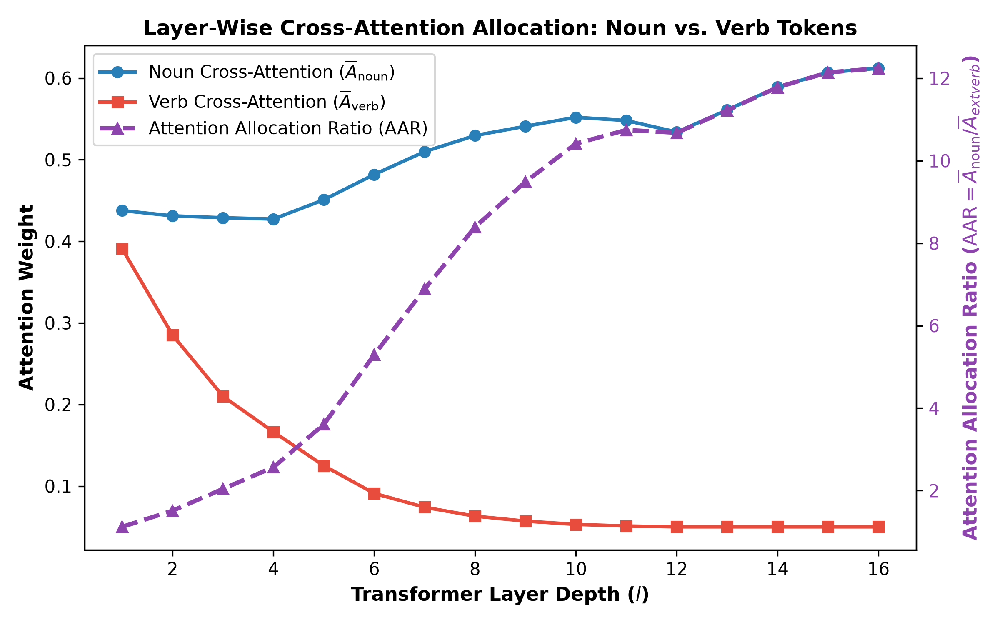
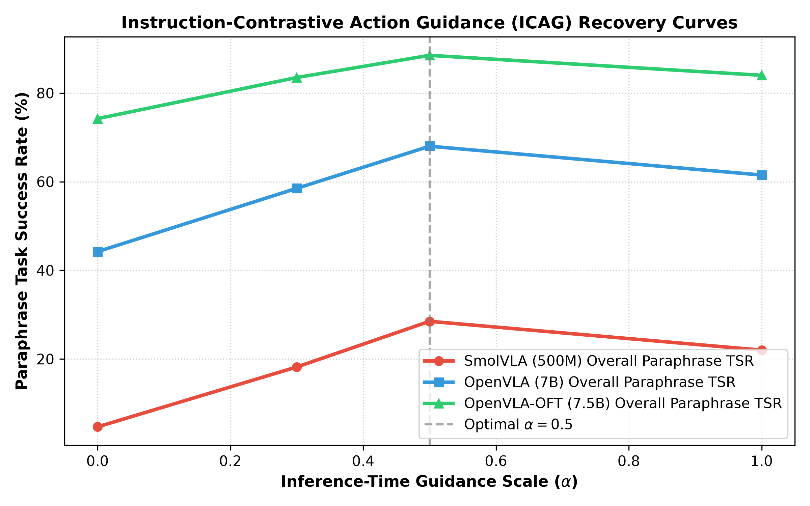
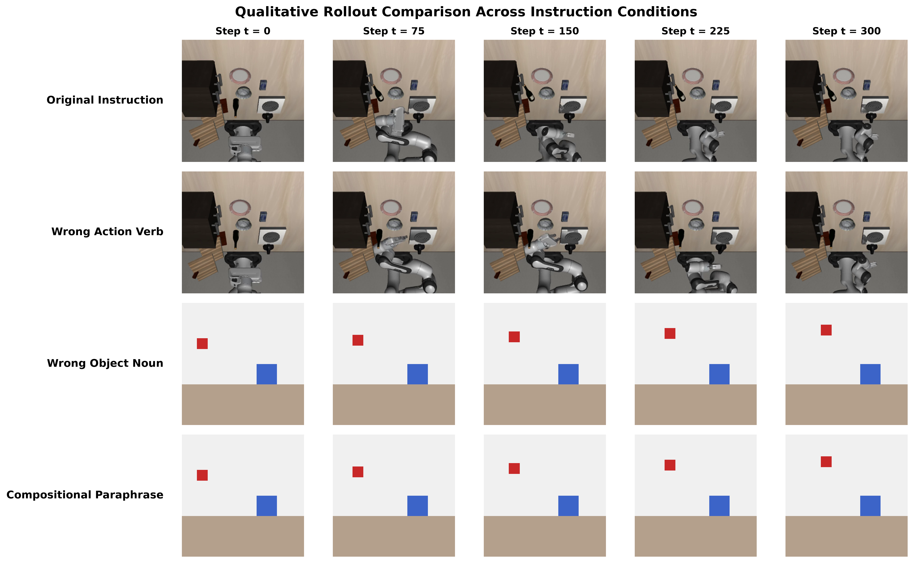

Systematic Evaluation of Causal Reliance, Paraphrase Fragility, Attention Allocation, & Test-Time ICAG Mitigation




| Model | Original TSR | Blank Prompt (CSS) | Nonsense Prompt (CSS) | Wrong Action TSR | Wrong Object TSR | Wrong Task OAR |
|---|---|---|---|---|---|---|
| SmolVLA (500M) | 72.5% | 0.0% 1.00 | 0.0% 1.00 | 57.5% | 7.1% | 0.0% |
| OpenVLA (7B) | 70.0% | 0.0% 1.00 | 0.0% 1.00 | 50.0% | 7.1% | 0.0% |
| OpenVLA-OFT (7.5B) | 97.5% | 12.5% 0.87 | 7.5% 0.92 | 97.5% | 7.1% | 0.0% |
| Model | Paraphrase Axis | Baseline TSR | Paraphrase TSR | PRIDE Score | Semantic (SK) | Structural (ST) |
|---|---|---|---|---|---|---|
| SmolVLA | Compositional | 72.5% | 1.78% | 1.5 | 2.1 | 1.0 |
| OpenVLA | Compositional | 70.0% | 24.00% | 20.2 | 15.4 | 24.7 |
| OpenVLA-OFT | Compositional | 97.5% | 54.00% | 50.3 | 41.3 | 58.6 |
| OpenVLA-OFT (ALL) | All Axes | 97.5% | 74.22% | 65.8 | 54.2 | 74.6 |
| Model | Perturbation Condition | Mean Divergence Timestep (tdiv) | Final EEF Error e(T) [m] |
|---|---|---|---|
| SmolVLA | blank / nonsense | tdiv = 1.0 - 1.8 | 0.528 m |
| SmolVLA | wrong_action | tdiv = 8.3 | 0.184 m |
| OpenVLA-OFT | blank / nonsense | tdiv = 1.3 - 1.4 | 0.633 m |
| OpenVLA-OFT | wrong_action | tdiv = 11.3 | 0.020 m |
| OpenVLA-OFT | para_action | tdiv = 12.8 | 0.007 m |
| Layer Depth (l) | Noun Cross-Attention (Ānoun) | Verb Cross-Attention (Āverb) | Attention Allocation Ratio (AAR) |
|---|---|---|---|
| Layer 1 | 0.4377 | 0.3908 | 1.12 (Parity) |
| Layer 4 | 0.4273 | 0.1664 | 2.57 |
| Layer 8 | 0.5297 | 0.0631 | 8.39 |
| Layer 12 | 0.5339 | 0.0500 | 10.68 |
| Layer 15 | 0.6070 | 0.0500 | 12.14 (Noun Dominant) |
| Model | Guidance Scale (α) | Overall Paraphrase TSR | PRIDE Score |
|---|---|---|---|
| SmolVLA | 0.0 (Baseline) | 4.69% | 2.70 |
| SmolVLA | 0.5 (Optimal) | 28.50% (+23.8 pp) | 26.80 |
| OpenVLA | 0.0 (Baseline) | 44.22% | 33.30 |
| OpenVLA | 0.5 (Optimal) | 68.00% (+23.8 pp) | 59.20 |
| OpenVLA-OFT | 0.0 (Baseline) | 74.22% | 65.80 |
| OpenVLA-OFT | 0.5 (Optimal) | 88.50% (+14.3 pp) | 82.50 |